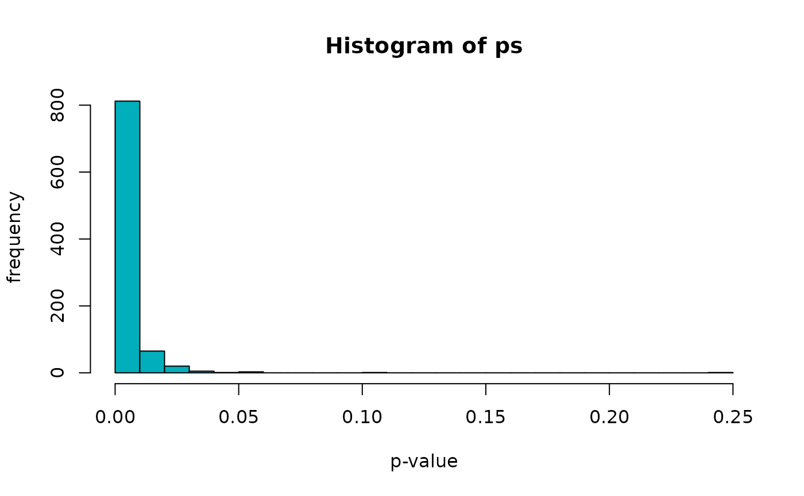

CORUM.Rmd
library(BioPlex)
library(graph)
library(reticulate)Get the latest version of the 293T PPI network …
bp.293t.3 <- BioPlex::getBioPlex(cell.line = "293T", version = "3.0")## Using cached version from 2023-01-06 19:10:56
head(bp.293t.3)## GeneA GeneB UniprotA UniprotB SymbolA SymbolB pW pNI
## 1 100 728378 P00813 A5A3E0 ADA POTEF 6.881844e-10 0.0001176357
## 2 222389 6137 Q8N7W2-2 P26373 BEND7 RPL13 1.340380e-18 0.2256644741
## 3 222389 5928 Q8N7W2-2 Q09028-3 BEND7 RBBP4 7.221401e-21 0.0000641669
## 4 222389 25873 Q8N7W2-2 Q9Y3U8 BEND7 RPL36 7.058372e-17 0.1281827343
## 5 222389 6124 Q8N7W2-2 P36578 BEND7 RPL4 1.632313e-22 0.2006379109
## 6 222389 6188 Q8N7W2-2 P23396 BEND7 RPS3 3.986270e-26 0.0010264311
## pInt
## 1 0.9998824
## 2 0.7743355
## 3 0.9999358
## 4 0.8718173
## 5 0.7993621
## 6 0.9989736… and turn into a graph:
gr.293t.3 <- BioPlex::bioplex2graph(bp.293t.3)Obtain the complete set of human protein complexes from CORUM …
corum.df <- BioPlex::getCorum(set = "core", organism = "Human")## Using cached version from 2023-01-06 19:38:27… and turn into a list:
corum.list <- BioPlex::corum2list(corum.df)
head(corum.list)## $`CORUM1_BCL6-HDAC4_complex`
## [1] "P41182" "P56524"
##
## $`CORUM2_BCL6-HDAC5_complex`
## [1] "P41182" "Q9UQL6"
##
## $`CORUM3_BCL6-HDAC7_complex`
## [1] "P41182" "Q8WUI4"
##
## $CORUM4_Multisubunit_ACTR_coactivator_complex
## [1] "Q09472" "Q92793" "Q92831" "Q9Y6Q9"
##
## $`CORUM11_BLOC-3_(biogenesis_of_lysosome-related_organelles_complex_3)`
## [1] "Q92902" "Q9NQG7"
##
## $`CORUM12_BLOC-2_(biogenesis_of_lysosome-related_organelles_complex_2)`
## [1] "Q86YV9" "Q969F9" "Q9UPZ3"Identify complexes with at least three subunits:
hasSubunits <- function(s, gr)
{
s <- intersect(s, graph::nodes(gr))
length(s) > 2
}
has.subunits <- vapply(corum.list, hasSubunits, logical(1), gr = gr.293t.3)
table(has.subunits)## has.subunits
## FALSE TRUE
## 1026 1391Identify complexes with at least one subunit targeted as bait:
hasBait <- function(s, df) any(s %in% df$UniprotA)
has.bait <- vapply(corum.list, hasBait, logical(1), df = bp.293t.3)
table(has.bait)## has.bait
## FALSE TRUE
## 724 1693Identify complexes with at least one PPI between subunits:
hasEdge <- function(s, gr)
{
s <- intersect(s, graph::nodes(gr))
graph::numEdges(graph::subGraph(s, gr)) > 0
}
has.edge <- vapply(corum.list, hasEdge, logical(1), gr = gr.293t.3)
table(has.edge)## has.edge
## FALSE TRUE
## 1232 1185We then subset the CORUM complexes to those having (i) at least three subunits, (ii) at least one subunit targeted as bait, and (iii) at least one PPI between subunits.
ind <- has.subunits & has.bait & has.edge
table(ind)## ind
## FALSE TRUE
## 1509 908
sub.corum.list <- corum.list[ind]The bioplexpy package implements a function for testing overlaps of PPIs with a complex of interest based on random sampling.
The function samples random subnetworks from the given PPI network, matching the number of subunits and the bait:prey ratio of the complex being tested. We then count the number of interactions in each replication, and compare against the observed number of interactions overlapping with the complex.
Here, we set up a python environment via reticulate that contains the bioplexpy package in order to invoke the function from within R, facilitating direct exchange of data and results between the BioPlex R and BioPlex Python packages:
reticulate::virtualenv_create("r-reticulate")## virtualenv: r-reticulate
reticulate::virtualenv_install("r-reticulate", "bioplexpy")## Using virtual environment 'r-reticulate' ...
reticulate::use_virtualenv("r-reticulate")
bp <- reticulate::import("bioplexpy")Here, we use a functionality from the BioPlex Python package to turn the BioPlex data into a NetworkX graph:
gr <- bp$bioplex2graph(bp.293t.3)
gr## <networkx.classes.digraph.DiGraph object at 0x7f9774105700>and also to obtain the subset of CORUM complexes satisfying the above criteria.
corum <- bp$getCorum(complex_set = "core", organism = "Human")
sub.corum <- corum[ind,] Now we carry out the overlap resampling test as implemented in the
bioplexpy package for all complexes passing the filter
criteria:
ps <- vapply(sub.corum$ComplexID,
function(i) bp$permutation_test_for_CORUM_complex(gr, sub.corum, i, 100),
numeric(1))
head(ps)## [1] 0.00990099 0.00990099 0.00990099 0.00990099 0.00990099 0.00990099
summary(ps)## Min. 1st Qu. Median Mean 3rd Qu. Max.
## 0.009901 0.009901 0.009901 0.011646 0.009901 0.207921We can now take a peak at the p-value distribution from the overlap permutation test, observing a strong concentration near zero, confirming that, as expected, many complexes are enriched for PPIs - when compared to random subsets of the overall PPIs network matching the complexes in size and composition.
hist(ps, breaks = 20, xlab = "p-value", ylab = "frequency", col = "#00AFBB")
The resampling test implemented in the BioPlex Python package addresses the question: given a specific network topology, how likely is it that n nodes are connected by at least m edges? In the spirit of a competitive enrichment test, we therefore assess whether the connectivity within the protein set of interest exceeds the connectivity outside of the protein set of interest (= overall / background connectivity).
It is also possible to test each complex for enrichment of PPIs based on network randomization as implemented in the BiRewire package. This addresses the question: in networks of different topology but the same node degree distribution, how likely is it that n nodes are connected by at least m edges? The network randomization test thus randomizes the overall network while keeping the protein set of interest fixed (in contrast to the resampling test, which randomizes the protein set of interest while keeping the overall network fixed).
This approach is incorporated in the testConnectivity
function, which we apply here to test all CORUM complexes that were
passing the filter criteria above. We therefore randomize the PPI
network a defined number of times (here: 100 times), and calculate for
each complex how often the number of edges in a randomized configuration
exceeded the number of edges observed for the true PPI network.
ps2 <- BioPlexAnalysis::testConnectivity(sub.corum.list,
gr.293t.3,
nr.reps = 10)
head(ps2)## CORUM12_BLOC-2_(biogenesis_of_lysosome-related_organelles_complex_2)
## 0.09090909
## CORUM15_NCOR_complex
## 0.09090909
## CORUM23_BLOC-1_(biogenesis_of_lysosome-related_organelles_complex_1)
## 0.09090909
## CORUM27_Arp2/3_protein_complex
## 0.09090909
## CORUM32_PA700_complex
## 0.09090909
## CORUM36_AP1_adaptor_complex
## 0.09090909
summary(ps2)## Min. 1st Qu. Median Mean 3rd Qu. Max.
## 0.09091 0.09091 0.09091 0.09291 0.09091 0.72727As before we can take a peak at the p-value distribution for the network randomization test, which displays as for the resampling test a strong enrichment of PPIs across almost all CORUM complexes.
hist(ps2, breaks = 20, xlab = "p-value", ylab = "frequency", col = "#00AFBB")